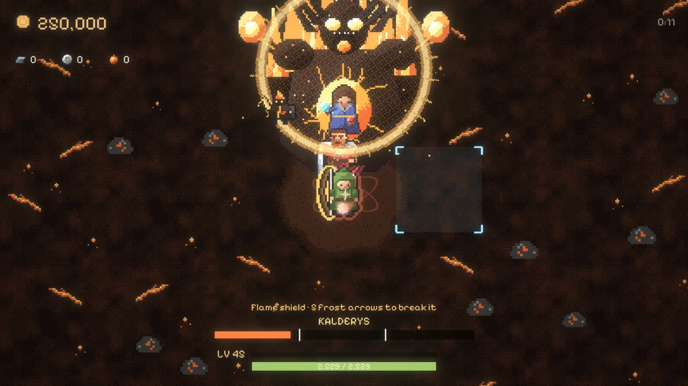
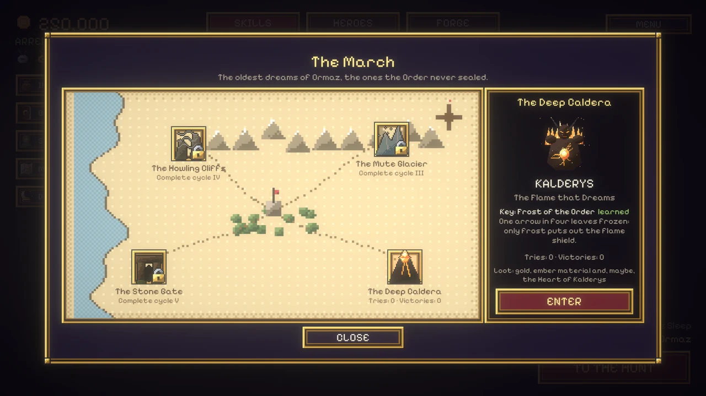
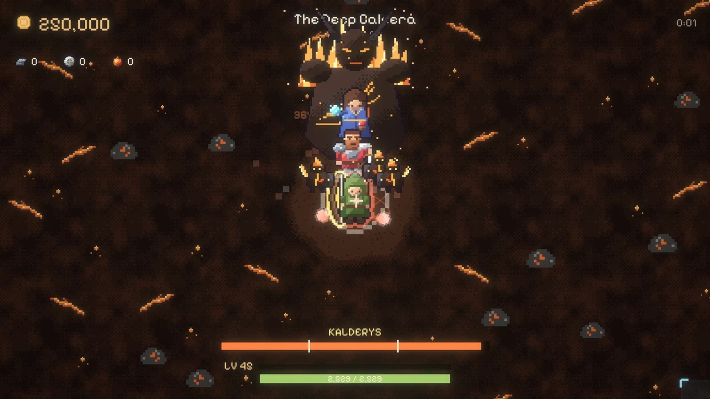
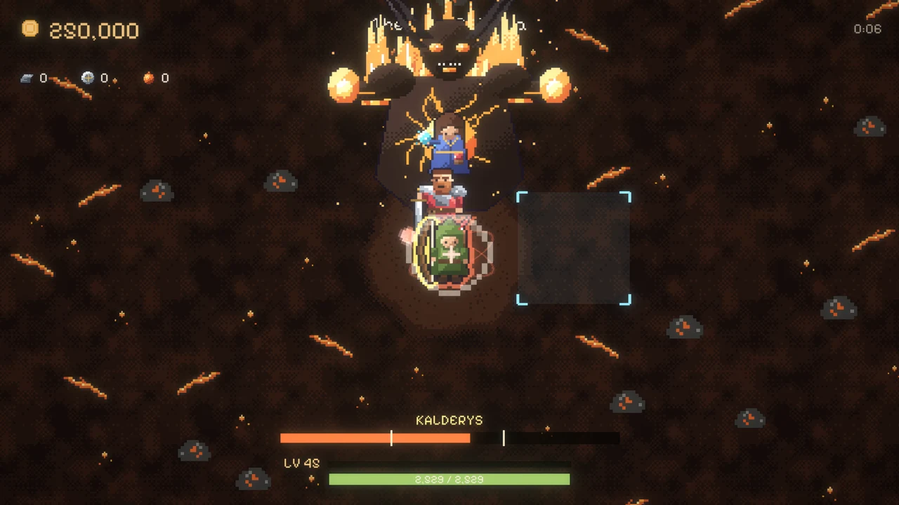
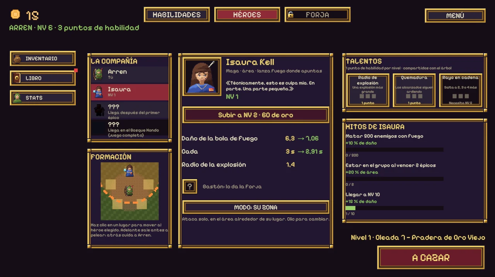
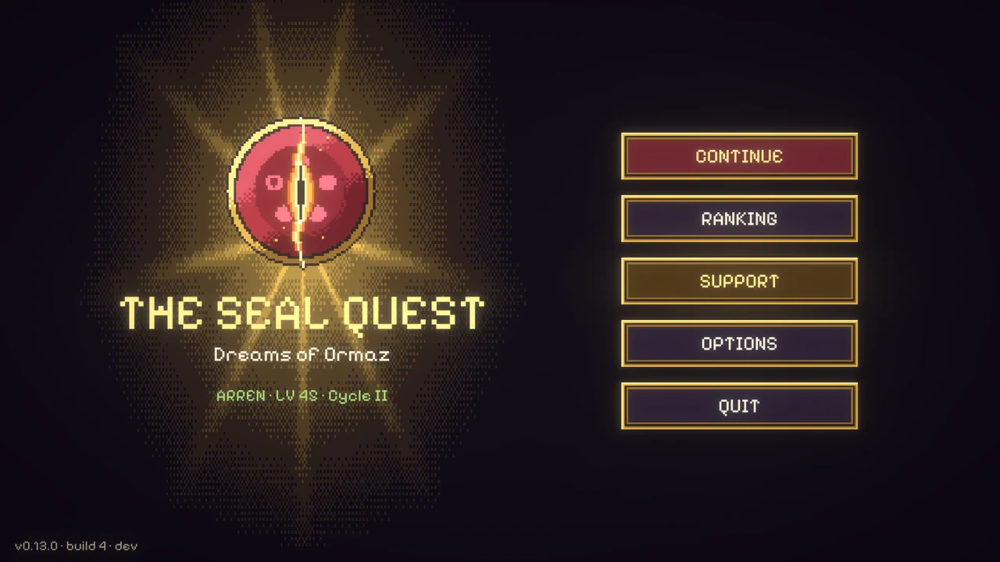
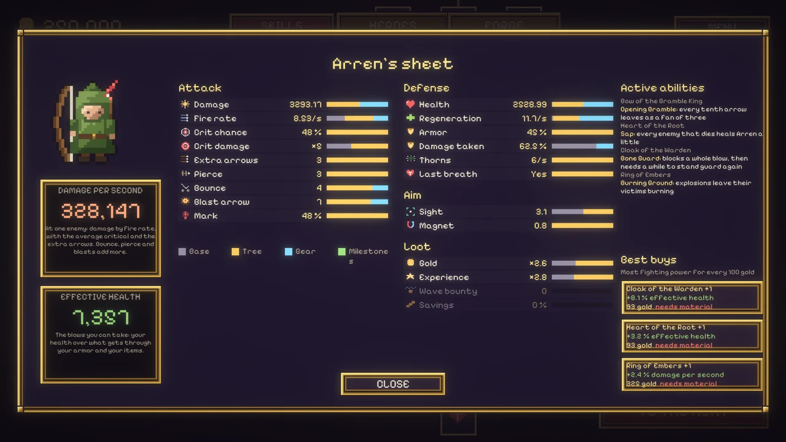

The Seal Quest: raids, cycles and the heroes' ranking
The Seal Quest: raids, ciclos y el ranking de héroes
When the demo came out, the end of the Ember Lord was the end of the game. Ninety-two of you reached it and kept playing with nothing left to chase. This update is about what comes after: a harder cycle to dream through, a raid boss that changes shape and a ranking to climb.

Dream again
Beat the Ember Lord and the Restless Sleep opens: the second cycle. You go back to the Meadow with everything you bought (the tree, the gold, Arren's level, the company, the items and the forge) and the epics come back far stronger.
The first time each epic falls in the new cycle it pays its chest again, and its item awakens: stronger bonuses, new art, and a unique ability, from a fan of bramble arrows to a bone guard that takes a whole blow. Every cycle you finish leaves a medal, and an aura of light grows around Arren.
One rule matters: dreaming again is earned. You can only do it once the last epic of the cycle you are in has fallen. Halfway through a cycle the button stays dim and tells you what is missing.
The elemental raids
These are the special epics. Finish a cycle and Arren learns a key, and a place opens on the map of the March: fire, ice, wind and earth, the oldest dreams of Ormaz, the ones the Order never sealed.

A raid is a fight of its own. No waves and no clock: the company, a raid boss, and four guards that come back every time they fall, a little faster each time. The boss has three phases, and between them it mutates: it flashes, shakes, grows and comes back angrier.
The first one is Kalderys, the Flame that Dreams, in the Deep Caldera, open after the second cycle.

In the second phase he throws slow embers at Arren that hit hard when they land, and your arrows can shoot them down. In the third, embers rain and a flame shield swallows every hit. Only the key breaks it: Frost of the Order makes one arrow in four leave frozen, and five frozen arrows put the shield out for a few seconds.

Every victory pays gold and ember material. The first time, it may also drop the Heart of Kalderys, a jewel with +20 % damage and arrows that burn, in a new slot nothing else can fill. It's certain within eight victories, so bad luck never lasts.
Your company, your call
Each companion now has an attack mode, switched on their card in the Heroes tab:
- Assist me: they hit whatever you're aiming at, so the whole company focuses fire.
- Their zone: they fight on their own in the area around their spot, and the formation shows each guarded area. Put Brannoc in front to meet the crowd early, or behind to guard Arren.
Isaura starts out assisting and Brannoc guarding his zone, the way they fought before.

Waves you can read
The lands got more personality, and your aim got more information:
- Hot sides: enemies still come from everywhere, but each land pushes hardest from two to four directions of its own (north and east in the Meadow).
- Learnable waves: every run of a land brings the same enemies in the same order, so your build and your aim decide the result, not luck. Where exactly they enter still changes.
- Epics give you time: each one always comes through the same entrance, from farther away, with an arrow on the edge of the screen showing where it's coming from.
Rebalanced from your runs
The demo sends anonymous play stats, and they showed where people got stuck and where they walked straight through. So the numbers changed:
- Swarms come in groups of 4 instead of 6, so wave 7 no longer doubles the crowd out of nowhere.
- The Meadow is gentler: its enemies have 15 % less health and the Bramble King 13 % less.
- The later lands make you earn the path: the Deep Wood, the Field of the Thousand and the Caldera ask for a few runs before their epic instead of letting you walk straight to it, and their epics were tuned to share the wall.
- The campaign is a little longer: the skill tree costs 13 % more, and enemies gain a bit more health per wave, with a bit more gold.
- The second cycle has its own curve. Whoever finishes the first cycle has the power of wave 40, so simply multiplying the numbers made it a stroll or a wall. The Restless Sleep grows flatter from a much higher start, and it was tuned so every epic takes a few tries again.
Heroes' ranking
The first time you open the game you can pick a nick (or stay anonymous) and enter the public ranking. Insignias first, then the highest wave, then level, then the enemies you've beaten. Every run, raid and cycle updates your row. You can see the top heroes from the main menu and on the game's page.
A proper title screen, and Arren's sheet
The game now opens on a title screen with Continue, Ranking, Options and Quit. Between hunts, the camp is tidier: the tabs in the middle, and a column of shortcuts on the left.

STATS opens Arren's sheet: every number he has, a bar that shows how much comes from the base, the tree, the gear and the milestones, his damage per second and effective health, his active abilities, and the three buys that give the most fighting power for your gold.

What's coming
What's decided so far:
- The other three raids: the Mute Glacier, the Howling Cliffs and the Stone Gate, each with its own boss, its key, its attack and its defense. Each one opens with the cycle that teaches its key: the third, the fourth and the fifth.
- More cycles after the Restless Sleep, each harder, with its own medal and its own color in Arren's aura.
- Jewels that grow, and scenes and music of their own for every raid.
- And the full game: many more epics, six heroes (Sister Edda, Brother Tobías and Nix join the company), choose your main, a bigger skill tree, dungeons, and the way the hunt ends. On Steam.
Tell me what you think
- Did you dream again? How far did you get in the Restless Sleep?
- If you faced Kalderys: did the shield and the frozen arrows make sense the first time?
- Would you play the other three raids before the full game, or would you rather have more epics first?
Cuando salió la demo, el final del Señor de las Brasas era el final del juego. Noventa y dos de ustedes llegaron y siguieron jugando sin nada más que perseguir. Esta actualización trata de lo que viene después: un ciclo más difícil para soñar de nuevo, un jefe de raid que cambia de forma y un ranking para escalar.
Soñar de nuevo
Vence al Señor de las Brasas y se abre el Sueño inquieto: el segundo ciclo. Vuelves a la Pradera con todo lo que compraste (el árbol, el oro, el nivel de Arren, la compañía, los ítems y la forja) y los épicos vuelven mucho más fuertes.
La primera vez que cae cada épico en el ciclo nuevo vuelve a pagar su cofre, y su ítem despierta: bonos más fuertes, dibujo nuevo y una habilidad única, desde un abanico de flechas de zarza hasta una guardia de huesos que aguanta un golpe entero. Cada ciclo que terminas deja una medalla, y un aura de luz crece alrededor de Arren.
Hay una regla importante: soñar de nuevo se gana. Solo puedes hacerlo cuando cae el último épico del ciclo en el que estás. A mitad de un ciclo el botón se ve apagado y te dice qué falta.
Los raids elementales
Son los épicos especiales. Termina un ciclo y Arren aprende una llave, y se abre un lugar en el mapa de la Marca: fuego, hielo, viento y tierra, los sueños más viejos de Ormaz, los que la Orden nunca selló.
Un raid es una pelea aparte. Sin oleadas ni reloj: la compañía, un jefe de raid y cuatro guardias que vuelven cada vez que caen, un poco más rápido cada vez. El jefe tiene tres fases, y entre una y otra muta: destella, se sacude, crece y vuelve más furioso.
El primero es Kalderys, la Llama que Sueña, en la Caldera Profunda, abierto después del segundo ciclo.
En la segunda fase lanza brasas lentas hacia Arren que pegan fuerte al llegar, y tus flechas pueden derribarlas. En la tercera llueven brasas y un escudo de llamas se traga todos los golpes. Solo la llave lo rompe: Frío de la Orden hace que una de cada cuatro flechas salga helada, y cinco flechas heladas apagan el escudo por unos segundos.
Cada victoria paga oro y material de brasa. La primera vez, además, puede caer el Corazón de Kalderys, una joya con +20 % de daño y flechas que queman, en una ranura nueva que nada más puede ocupar. Cae segura antes de la octava victoria, así que la mala suerte nunca dura.
Tu compañía, tu decisión
Cada compañero tiene ahora un modo de ataque, que se cambia en su tarjeta de la pestaña de Héroes:
- Asistirme: ataca lo que estás apuntando, así toda la compañía concentra el fuego.
- Su zona: pelea por su cuenta en el área alrededor de su lugar, y la formación muestra cada zona que cuida. Pon a Brannoc adelante para que salga al encuentro de la multitud, o atrás para que cuide a Arren.
Isaura empieza asistiendo y Brannoc cuidando su zona, como peleaban antes.
Oleadas que se pueden leer
Las tierras ganaron personalidad, y tu puntería, información:
- Lados calientes: los enemigos siguen llegando de todos lados, pero cada tierra empuja más fuerte desde dos a cuatro direcciones propias (en la Pradera, norte y este).
- Oleadas que se aprenden: cada partida de una tierra trae los mismos enemigos en el mismo orden, así que decide tu build y tu puntería, no la suerte. El punto exacto por donde entran sigue cambiando.
- Los épicos te dan tiempo: cada uno entra siempre por la misma puerta, desde más lejos, con una flecha en el borde de la pantalla que marca por dónde viene.
Rebalanceo con sus partidas
La demo manda estadísticas anónimas de juego, y mostraron dónde se trababa la gente y dónde pasaba de largo. Así que los números cambiaron:
- El enjambre llega en grupos de 4, no de 6: la oleada 7 ya no duplica de golpe los enemigos.
- La Pradera es más amable: sus enemigos tienen un 15 % menos de vida y el Rey Zarza un 13 % menos.
- Las tierras siguientes piden ganarse el camino: el Bosque Hondo, el Campo de los Mil y la Caldera piden algunas salidas antes de su épico, en lugar de cruzarse de una, y sus épicos se ajustaron para repartir el muro.
- La campaña es un poco más larga: el árbol cuesta un 13 % más y los enemigos ganan algo más de vida por oleada, con algo más de oro.
- El segundo ciclo tiene su propia curva. Quien termina el primer ciclo tiene el poder de la oleada 40, así que multiplicar los números lo volvía un paseo o un muro. El Sueño inquieto crece más plano desde un punto de partida mucho más alto, y se ajustó para que cada épico vuelva a pedir algunos intentos.
Ranking de héroes
La primera vez que abres el juego puedes elegir un nick (o jugar anónimo) y entrar al ranking público. Primero cuentan las insignias, después la oleada más alta, después el nivel y después los enemigos que derrotaste. Cada partida, raid y ciclo actualiza tu fila. Puedes ver a los mejores héroes desde el menú principal y en la página del juego.
Un menú principal de verdad, y la ficha de Arren
El juego ahora abre en un menú principal con Continuar, Ranking, Opciones y Salir. Entre cacerías, el campamento está más ordenado: las pestañas al centro y una columna de accesos a la izquierda.
STATS abre la ficha de Arren: todos sus números, una barra que muestra cuánto pone la base, el árbol, el equipo y los hitos, su daño por segundo y su vida efectiva, sus habilidades activas y las tres compras que más poder de pelea dan por tu oro.
Lo que viene
Lo que ya está decidido:
- Los otros tres raids: el Glaciar Mudo, los Acantilados del Aullido y la Puerta de Piedra, cada uno con su jefe, su llave, su ataque y su defensa. Cada uno se abre con el ciclo que enseña su llave: el tercero, el cuarto y el quinto.
- Más ciclos después del Sueño inquieto, cada uno más difícil, con su medalla y su color en el aura de Arren.
- Joyas que crecen, y escenas y música propias para cada raid.
- Y el juego completo: muchos más épicos, seis héroes (Sor Edda, el Hermano Tobías y Nix se suman a la compañía), elige a tu héroe, un árbol de habilidades más grande, mazmorras y el final de la cacería. En Steam.
Cuéntame qué te parece
- ¿Soñaste de nuevo? ¿Hasta dónde llegaste en el Sueño inquieto?
- Si enfrentaste a Kalderys: ¿el escudo y las flechas heladas se entendieron la primera vez?
- ¿Preferirías jugar los otros tres raids antes del juego completo, o tener más épicos primero?